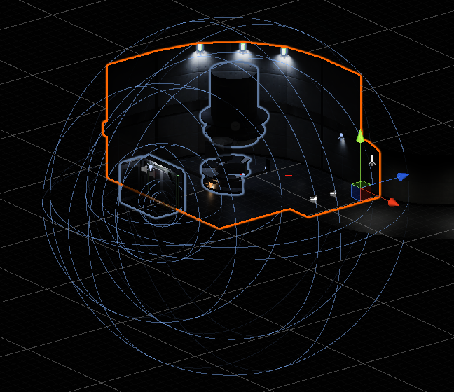
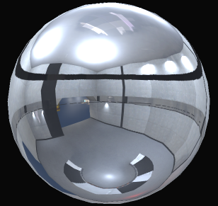

Le projet de remake fait suite au demake de l'examen de l'hivers 2019. Objectif : Faire un remake du demake de Black Mesa.
En fin de premier trimestre à Ludus Académie, nous avons eu un examen dont le sujet était de faire un demake d'un jeu connu et recent. Mon binôme et moi avions choisi la license Half Life du studio Valve avec l'opus Black Mesa, un remake de Half Life 1.
Le demake est un exercice de style ou l'objectif est de faire l'inverse d'un remake. Il s'agit donc d'inverser le processus d'amélioration et de caricaturer l'œuvre originale.

En fin de première année, nous avons décidé avec mon binôme d'agrandir l'équipe et de faire un remake de notre demake. Nos intentions étaient claires : utiliser Unity, faire de la 3D, et impressionner nos professeurs.
En effet, les moteurs 3D n'étaient pas vraiment au programme de la première année. Mais nous avons décidé de sortir des sentiers battus et d'apprendre à les utiliser. Et on en a appris des choses...
Concernant le style de l'environnement, nous avons cherché à réaliser des salles et des éléments rappelant l'univers original.
Nous avons dynamisé les sons. Ils sont filtrés et modifiés selon l'environnement. Les sons lointains sont sourd et étouffés et les grandes salles produisent de l'écho. De plus, une attention particulière a été porté aux bruits de pas qui changent en fonction du sol sur lequel le joueur évolue.
Les lumières et éclairages ont été très travaillés afin d'offrir des environnements réalistes et cohérents. Nous avons utilisé différentes technologies telles que le HDR, le baking de lumières, les Light Probes (Orbes de reflexion) ou encore des Volumetric Scatter (Dispersion volumétrique).
Le joueur incarne un agent de la sécurité. Le modèle 3D et les animations ont été obtenus sur internet. Nous avons dû organiser les animations avec un animator controller disponible avec le moteur Unity.
Afin d'être précis dans les tirs du joueur, nous avons utilisé des raycast pour prédire si le tir touche sa cible avant même que l'animation ne se joue.
Véritable icône de la pop culture, le Head Crab est un ennemi de base de la license. Cet ennemi cherche à sauter sur la tête de ses victimes pour s'accoupler avec. Nous avons particulièrement travaillé sur cette créature à la fois pour ne pas la rater, mais aussi pour le plaisir de la recréer la plus fidèlement possible.
Nous avons trouvé un modèle lowpoly d'un head crab sur internet. Nous l'avons utilisé comme base pour notre mesh que nous avons retravaillé. Ensuite, nous l'avons rig (création d'un squelette) et animé.

Concernant les textures, celles fournis avec le modèle lowpoly ne convenaient plus. Nous avons alors fait un nouveau mapping du modèle puis nous l'avons texturé à l'aide de Substance Painter.
Afin d'être un maximum fidèle à l'œuvre originale, nous avons utilisé les sons originaux inimitables :
Le ragdoll du headcrab n'a pas été une mince affaire. En effet, dès que l'on touche à de la physique et surtout avec un objet complexe tel qu'un squelette, ça devient rapidement n'importe quoi. Néanmoins, nous sommes arrivés à un équilibre vraiment convainquant et nous en sommes très fier !
Pour que le Head Crab soit un véritable ennemi, il faut qu'il en ai le comportement. Nous lui avons codé un comportement simple, mais efficace. S'il vous voit, il vous suit et s'il est assez proche, il vous saute dessus. Concernant, ses déplacements, le Head Crab suit une navigation map.